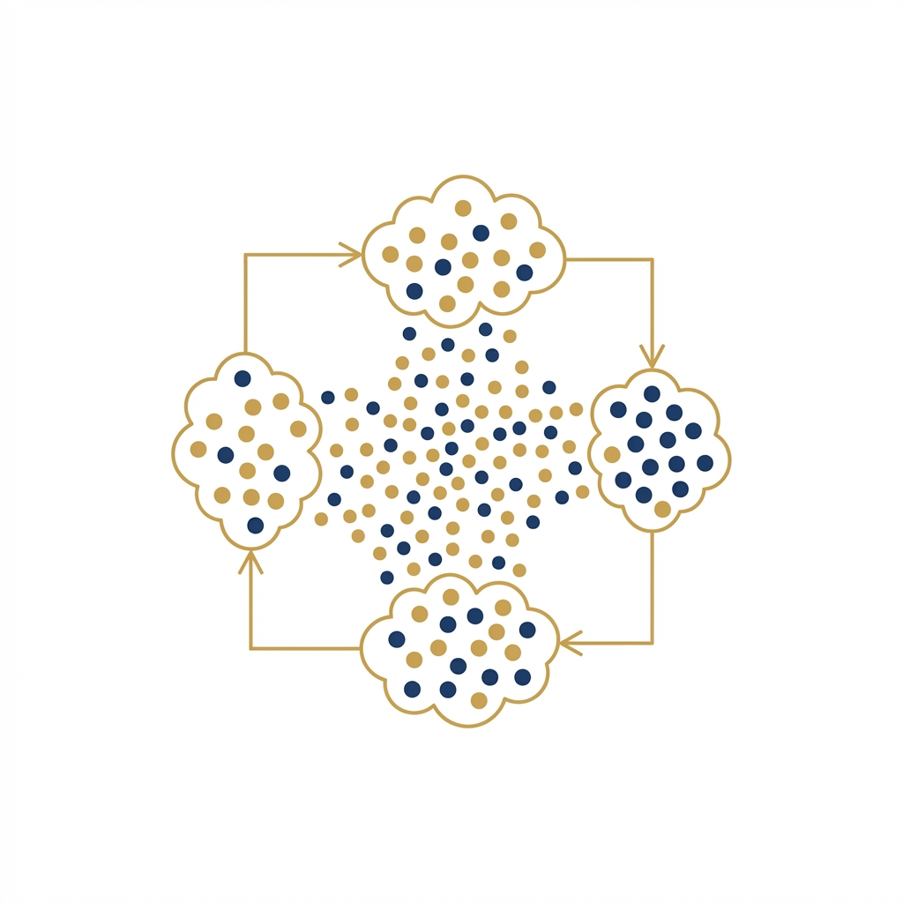
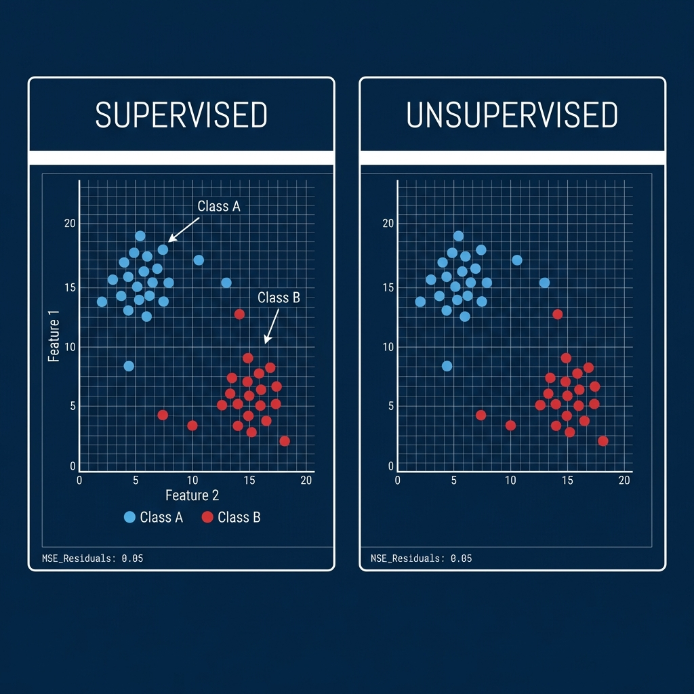
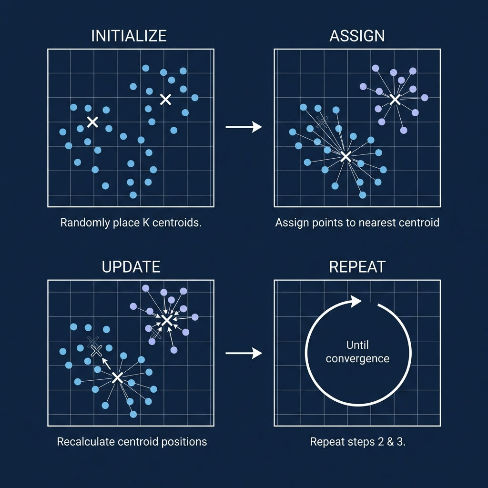
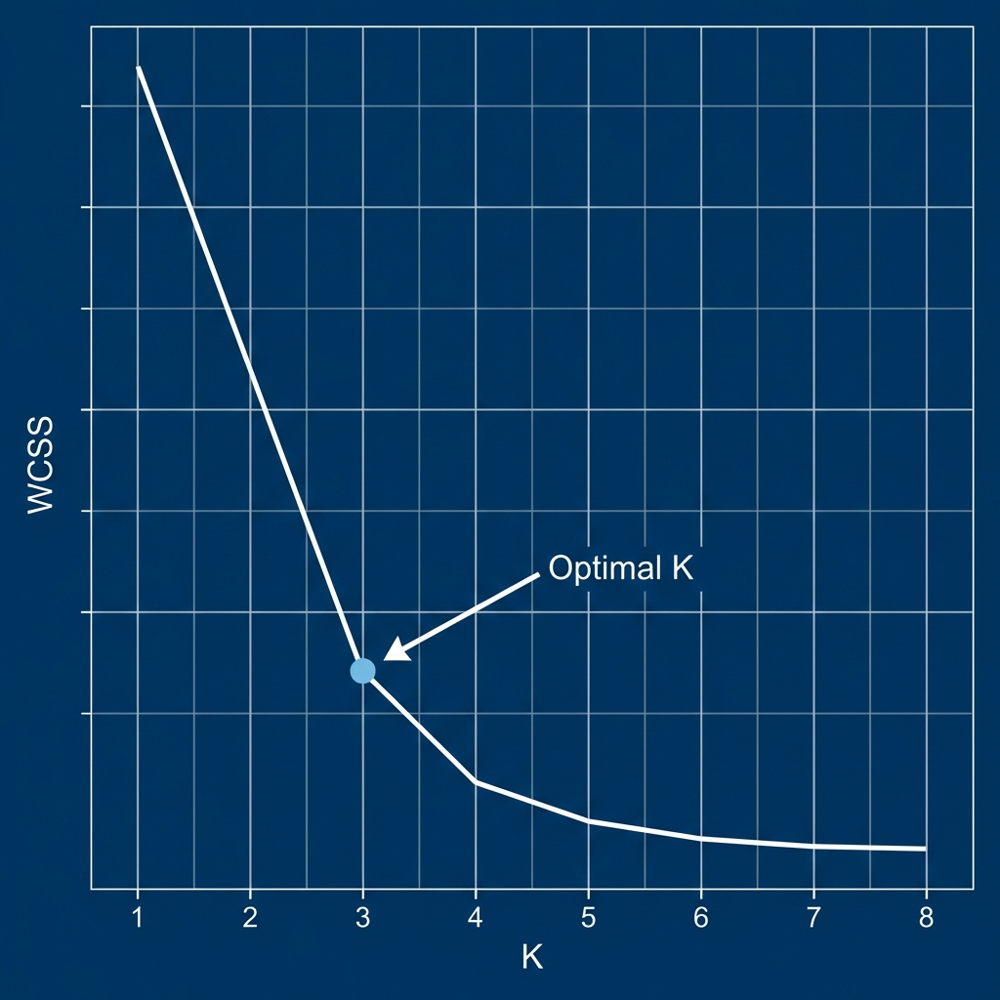

Unsupervised Learning
Course: Computer Systems Engineering
Module: Artificial Intelligence (AI)
Topic: Unsupervised Learning (Clustering)
Estimated Reading Time: 25 Minutes
By the end of this chapter, you will be able to:
1. Differentiate between Supervised (Labeled) and Unsupervised (Unlabeled) Learning.
2. Explain the concept of Clustering and its real-world applications.
3. Execute the K-Means algorithm (Assign $\rightarrow$ Update loop).
4. Evaluate the optimal number of clusters ($K$) using the Elbow Method.
So far, we have relied on the "Right Answer" (Labels) to train our models. But in the real world, data is often disorganized and unlabeled. This week, we explore Unsupervised Learning, focusing on Clustering. We will learn strategies like K-Means, which allow the machine to autonomously discover hidden patterns and group similar data points without human guidance.
1. Supervised vs. Unsupervised Learning
In Weeks 2 and 3, every dataset we touched had a clear "correct answer" ($Y$). We knew the price of the house, or whether the email was spam. Our goal was simply to map Input $\rightarrow$ Output. This is Supervised Learning.
But what if we don't have labels? What if we just have a massive dump of raw customer data with no indication of "Good Customer" or "Bad Customer"?
This brings us to Unsupervised Learning. Here, the goal is not to predict a specific outcome, but to explore the data and find hidden structures. Notice how K-Means still relies on Linear Algebra (means, vectors) and Geometry (distance), even without labels—reinforcing concepts from Week 2 and Week 3. The feedback loop changes: there is no "Loss function" telling the model it was wrong. Instead, the model tries to group items that look similar.
| Feature | Supervised Learning | Unsupervised Learning |
|---|---|---|
| Data | Labeled ($X, Y$) | Unlabeled ($X$ only) |
| Goal | Predict outcomes | Find hidden structures/patterns |
| Feedback | "You were wrong" (Loss) | "This looks similar to that" |
| Examples | Regression, Classification | Clustering, Dimensionality Reduction |

Figure 1: Left: Supervised Learning matches shapes to known labels (Red/White). Right: Unsupervised Learning just sees dots and must find its own groups based on position.
Imagine you run an e-commerce site.
- Supervised Approach: You use detailed past purchase history to predict
exactly how much Rands a specific user will spend next month. You have a
"Target".
- Unsupervised Approach: You just have a list of all user activity. You ask the
AI to "Group similar users". It might discover that "Group A" buys diapers and beer (Parents),
while "Group B" buys gaming laptops and energy drinks (Gamers). You didn't tell it these groups
existed; it found them.
2. K-Means Clustering
Clustering is the task of dividing a dataset into groups (clusters) where data points in the same group are more similar to each other than to those in other groups.
The most popular and simple algorithm for this is K-Means. Its goal is to partition the data into K distinct clusters. By default, K-Means uses Euclidean distance to measure how close a point is to a centroid.
2.1 The Algorithm (The Dance of Centroids)
How does K-Means actually work? It is an iterative process that relies on finding the "center" of a group perfectly.

Figure 2: The K-Means Loop. It keeps cycling until the Centroids stop moving.
Imagine a large party in a hall. You place 3 large speakers (Centroids) in random spots and play different music on each.
- Assign: Everyone walks to the speaker playing the music they like best.
- Update: You notice where people gathered, and you move the speaker to the exact center of that crowd to give them better sound.
- Repeat: Because the speaker moved, some people at the edge might now be closer to a different speaker, so they switch. You keep moving the speakers until everyone is happy and stops moving.
The Formal Steps:
1. Initialize: Pick K random points (Centroids).
2. Assign: Color every data point based on its nearest Centroid.
3. Update: Move the Centroid to the mathematical average (mean) of its cluster.
4. Repeat: Continue until convergence (Centroids stop moving).
Important Note: K-Means works best when clusters are roughly circular and similar in size. For complex shapes or varying cluster densities, other algorithms like DBSCAN or Hierarchical Clustering may be more appropriate.
2.2 Picking "K"
One major limitation of K-Means is that you must tell it how many clusters ($K$) to find before you start. But how do you know if your customers fall into 3 groups or 5 groups?
We often use the Elbow Method. We run K-Means for $K=2, 3, 4, 5...$ and measure the "tightness" of the clusters (how close points are to their center).

Figure 3: Finding the optimal K. We look for the "Elbow" where the rapid improvement levels off.
- Steep Drop: Adding a cluster helped a lot! (e.g., splitting a mixed group).
- Flat Line: Adding more clusters doesn't help much (just chopping up existing good groups).
- The Elbow: The perfect balance. In Figure 3, the arrow points to K=3.
3. Lab Preview: Investigating Clusters
In this week's lab, we will strip away the complexity of real-world data to focus on the mechanics of the algorithm.
- Generate Data: We will use
scikit-learn'smake_blobsfunction to create synthetic "blobs" of data. We will create 3 distinct groups. - Run K-Means: We will ask the model to find these groups.
- The "Ah-Ha" Moment: We will visualize the results. You will see the Centroids migrating to the center of the blobs.
- Experiment: We will see what happens when we lie to the machine—telling it to find 4 clusters when there are only 3. This visual proof demonstrates why picking the right $K$ is so critical.
4. Summary
Unsupervised Learning is powerful because Unlabeled Data is cheap and abundant, while Labeled Data is expensive.
-
Clustering allows us to find structure in chaos.
-
K-Means uses a simple loop of Assign $\rightarrow$ Update to group similar items.
Next week, we leave "Classical Machine Learning" behind. We will enter the modern era of AI: Deep Learning, where we build Neural Networks to solve problems far too complex for simple lines or clusters.
Test Your Knowledge
Ready to check your understanding of this week's material? Take the interactive quiz now!
Start Quiz